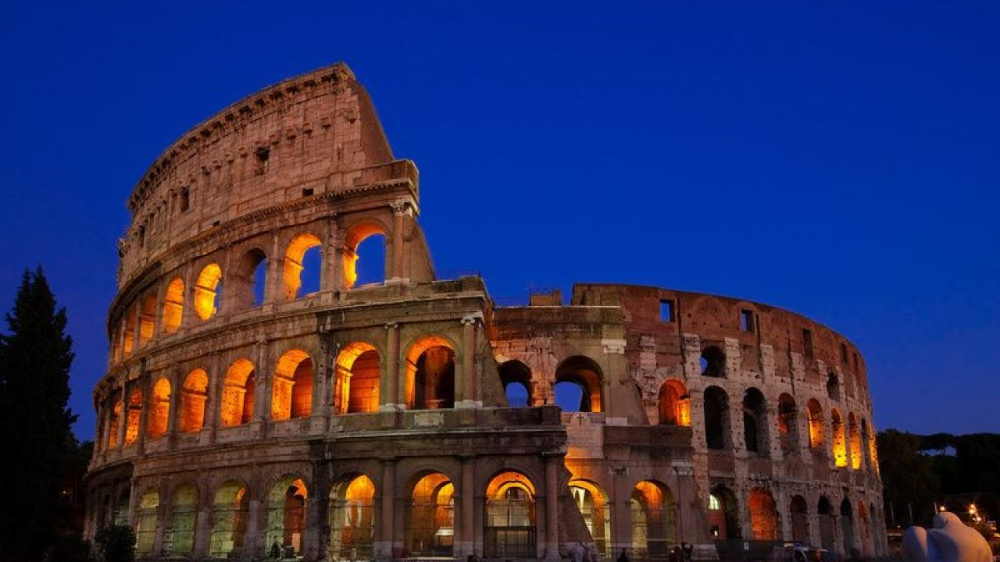

El Coliseo de Roma
El Coliseo Romano es, sin duda, el monumento – símbolo más emblemático de la Ciudad Eterna. Fue construido para celebrar la grandeza de un imperio y de una ciudad que marcó la historia mundial.
Oblectat me, Roma, tuas spectare ruinas, ex cuius lapsu gloria prisca patet… Pío II, De RomaAhora, las cosas han cambiado y ya no hay gladiadores ni leones luchando pero es increíblemente fascinante contemplarlo. Este monumento, cada una de sus piedras, nos habla de su importancia. Construido hace 2000 años con los instrumentos técnicos de esa época sigue asombrándonos con su grandiosidad.
